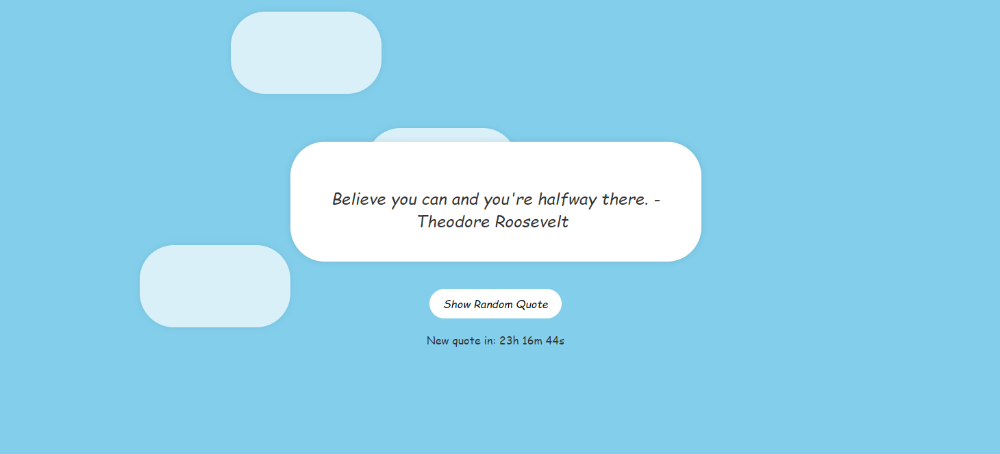

Welcome!
My name is Maksims Kurjanovics Kravcenko, and I am a rising Senior at Rutgers University-New Brunswick, studying Computer Science, focusing mainly on Data Analytics and Software Engineering.
I'm passionate about many things: App Development, Web Development, Full-Stack App creation... However, I started developing an increased interest in AI/ML creation, specifically the incorporation of AI as a tool to cater insights on one's business performance and/or suggestions on how to optimize their business given a sequence of data. You can find a lot about me in the navigation bar buttons, which go into depth as to who I am, what I know, and what I aspire to be!
GitHub contributions so far:
Contact:
| Email: | mk1921@scarletmail.rutgers.edu |
| LinkedIn: | Maksims Kurjanovics Kravcenko |
| GitHub: | Eemkayy |
| Phone: | (732)-209-5275 (Text is preferred) |
About Me
Starting at the age of 8-9, I was given the freedom of exploring the Internet, and with that, came a payload of many new experiences: Games, YouTubers, Friends... So I always found myself engaged with the virtual world for the things it had to offer. At some point, I started to wonder how the websites I visited were created, and that's where my interest in becoming a Software Engineer came to life. I wanted to be a military pilot, an actor, all sorts of things, but having been involved with computers at a young age steered me into Computer Science, which, brings light to the person I am today. [More to be continued]
Projects
University-wide project(s):-
Assignment Guru
Currently a Strategic Development Advisor for Dr. Ana Paula Centeno, the Assignment Guru Program aims to create assignments for CS111 and CS112 that demonstrate the positive social impact of computing. The program integrates social responsibility and visual applications into early computing courses, making assignments more engaging and relatable for students. Supported by the Advancing Women in Computer Science initiative, the program fosters collaboration among peers, faculty, and mentors, contributing to a more inclusive CS environment at Rutgers.
View Project
-

World of Tanks Trainer
Having been introduced to this game when I was 5, I really enjoyed the idea of driving a metal sarcophagus and shoot explosive pellets out of it! About 15 years later, sometimes, to this day, I find myself enjoying this game as I always did with my father. One day, an idea arose to me to create a trainer that focuses on every single tank in this game and shows which area is best to shoot this tank at, or the general weak spots of the tank and easily accessible information about them. This project is still work in progress, and is expected to take a long time to build
View Project
-
Aetheris
Currently a Strategic Development Advisor for Dr. Ana Paula Centeno, the Assignment Guru Program aims to create assignments for CS111 and CS112 that demonstrate the positive social impact of computing. The program integrates social responsibility and visual applications into early computing courses, making assignments more engaging and relatable for students. Supported by the Advancing Women in Computer Science initiative, the program fosters collaboration among peers, faculty, and mentors, contributing to a more inclusive CS environment at Rutgers.
View Project
Will be adding more soon!
Skills
- HTML
- CSS
- JavaScript
- Python
- React
- Java
- C
- Typescript
- RxJS
- Microsoft (PPTX, MSWord, Sheets...)
- Google (Slides, Forms, Docs...
Language Proficiencies
- English
- Spanish
- Russian
- Catalan
- Valencian
- French
- Japanese
Experience
-
TDP Intern @ AT&T
Jun 2024 - Present
Location: Middletown, New Jersey, United States
Responsibilities:

-
Data Structures Assignment Developer Coordinator @ Rutgers University–New Brunswick
May 2024 - Present
Location: Remote
Responsibilities:
-
Head Learning Assistant @ Rutgers University–New Brunswick
Aug 2023 - May 2024
Location: Piscataway, New Jersey, United States
Responsibilities:

-

Aquatics Supervisor @ Rutgers University–New Brunswick Recreation
Sep 2023 - Present
Location: Piscataway, New Jersey, United States
Responsibilities:
Education
-
Rutgers University–New Brunswick
Undergraduate, Majoring in Computer Science B.S. Degree
Sep 2021 - May 2025
GPA: 3.92/4.0
Notable Courses: Data Structures, Computer Architecture, Data Management for Data Science, Principles of Programming, Principles of Information and Database Management, Internet Technology
Extracurricular Activities:
- Member, Phi Beta Kappa National Honor Society
- Roster, IM Softball Team (S'24 - Present)
- Roster, IM Volleyball Team (S'24 - Present)
- Member, Rutgers E-sports (F'21 - Present)
- Member, Rutgers RUMAD (Mobile App Development) (F'22 - Present)
- RUMAD Accelerator Program (F'22)
- Member, Rutgers Swim Club (F'22 - Present)
- Eboard, Meet Director (S'24 - Present)
- Qualified for CCS Nationals '22-'23 (Ohio)
- Mentor/Member, Peer Leader Mentor Program (S'24)
- Member, First Generation Students Advisory Board (F'22 - Present)
- Member, Rutgers Russian Club (Sep 2022 - Present)
- Member/Guest Speaker/ Former Brand Ambassador, 4WARD Program (S'22 - Present)
- Participant, RUStrong'24 (2nd Place, Heavyweight)
- IGNITE Speaker, MARK Conference (S'24)
- Coordinator, Assignment Guru Summer Program Cohort 2 (Summer/F'23)
- Member, Rutgers-USACH Language Exchange Program (S'23)
- Attendee, Blueprint Software Engineering Fellowship (S'23)
- Member, LVL-UP Program (F'22)
- Member, Varsity E-Sports Team (F'21-F'22)
- Developer, Data Structures Assignment Guru Cohort 1 (Summer 2022)
- Member, First-Year Fellowship Program(S'22)
- Social Change Project social media manager
- "Best Social Change Project" nominee
-
Complejo Educativo Mas Camarena
High School Diploma
Sep 2014 - May 2020
GPA: 3.8/4.0
Extracurricular activities:- Robotics Team (2014-2016)
Hobbies
-
Working out
As one of my dear friends say, "Health is wealth," and there is no better time to focus on it than while I am in my early 20s. I consistently bulk and cut to increase my strength while maintaining a lean body, though cutting has proven to be difficult, therefore I am sticking to maintaining a lean body instead. I tend to work out 5 times a week, and resting the remaining two, as the body needs to rest as well, otherwise, I hinder my progress

-

Gaming
A mind cannot be always working, sometimes you have to leisure it! Gaming is one of my all-time passions, having received my first ever computer at the age of 8, I surfed the Internet and found myself playing Flash games at first, and then I slowly migrated into platforms like Steam, Epic Games, and so forth. My main interests are FPS, though I sometimes need to lay off that and instead play indie games like Stardew Valley or singleplayer games like The Witcher 3
-
Swimming
One of my childhood passions, I used to swim since I was 6 years old, retiring professionally at the age of 18. I loved swimming dearly, with my favorite stroke being freestyle, followed by fly. My greatest accomplishment was becoming the 14th best swimmer in my category in 50m Freestyle during the Spanish Championships in 2019 with a time of 25.03s. My all-time best record in 50m LCM is 25.00s, yet to be beaten (or perhaps I'll keep it that way for aesthetics sake). It is a great sport that I still practice to this day, as I am currently appointed as the Meet Director for Rutgers Swim Club (and I am considering becoming their coach for my senior year...), but, time will tell!

-
And many more! [WIP]
Resume/CV
Link to my Resume/CV.